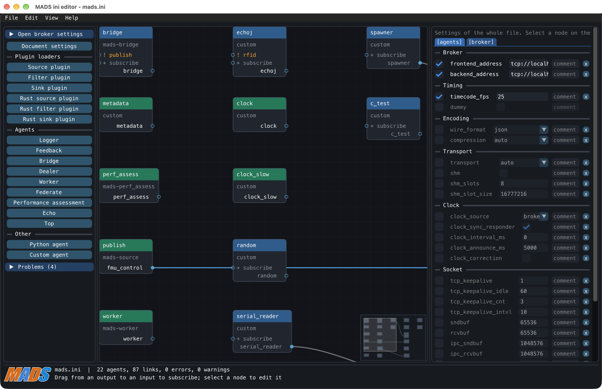
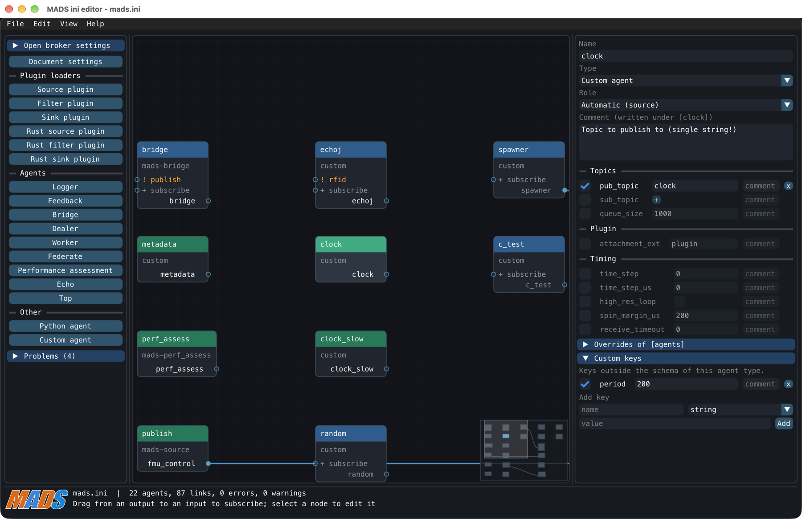
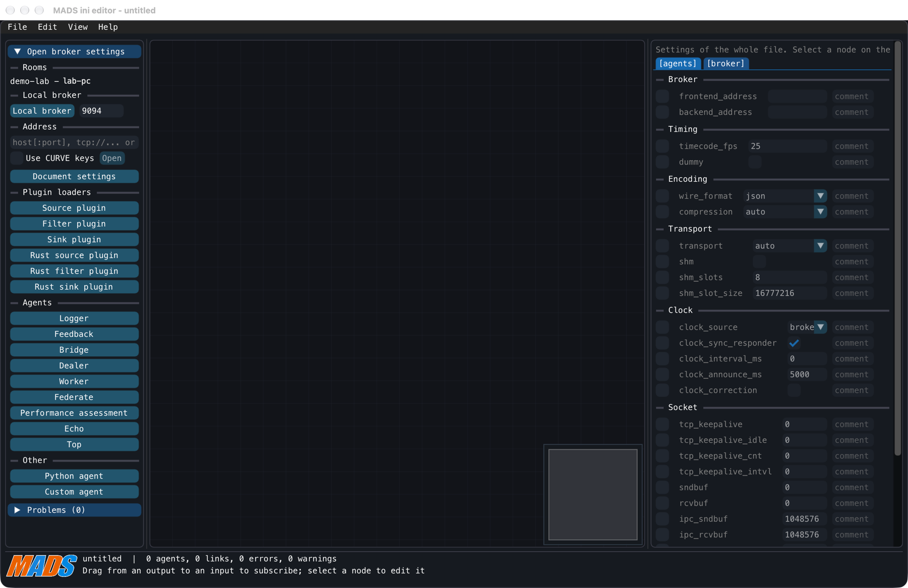
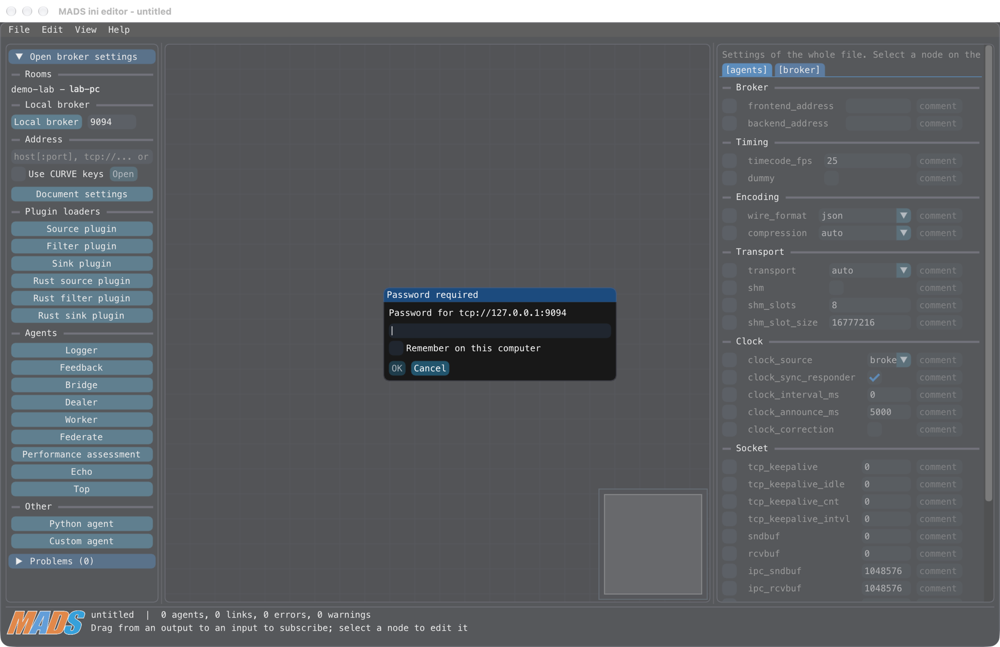
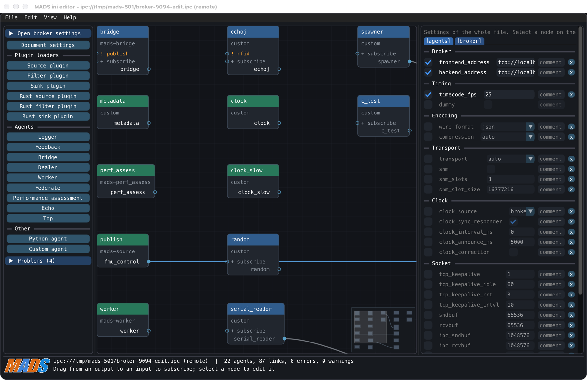

The mads.ini Editor
MADS v3 ships mads ini, a graphical node editor for the mads.ini settings file. It shows agents as nodes and topics as links, keeps your comments intact, offers command-line helpers for scripts, and can edit the settings file of a running broker from another computer, protected by CURVE keys and/or a password.
This guide describe a feature that is introduced by MADS v3.x, and that is not available on previous versions.
Why an editor for mads.ini?
The mads.ini file is where you describe a whole MADS system: one section per agent, plus the [agents] and [broker] sections with the global settings. It is a plain text file, and that is fine for a handful of agents. With twenty agents, though, it becomes hard to answer simple questions: who receives what? who publishes this topic? did I misspell a topic name?
mads ini answers them visually. Each agent is a node, and each topic (the label agents use to publish and subscribe to messages) that one agent publishes and another subscribes to is a link. Typical uses:
- see the whole system at a glance and how data flows from sources to sinks;
- avoid typos in topic names: you connect pins by dragging, instead of typing strings;
- find dangling topics: subscriptions nobody publishes to are flagged;
- add and configure agents with typed widgets instead of remembering key names;
- edit the settings of a running broker from your laptop, without logging into the machine hosting it.
The editor reads and writes the very same mads.ini: no new format, and the file remains perfectly usable with a text editor.

mads.ini: palette on the left, canvas with nodes and links in the middle, inspector on the right (here showing the [agents] document settings), status footer at the bottom.Starting the editor
mads ini # opens <prefix>/etc/mads.ini, or a new document from the template
mads ini deploy/mads.ini # opens a specific fileIf your MADS build has no graphical interface (or mads-ini is not installed), a bare mads ini just prints the template file, as in older releases, and mads ini FILE fails with a message pointing you to the headless commands described below. To print the template explicitly, use mads ini --print.
As for any other MADS command on Windows, type mads-ini (with the hyphen).
A tour of the window
The window has three parts:
| Part | What it does |
|---|---|
| Palette (left) | Open broker settings panel (see remote editing), Document settings, and one button per node type, grouped as Plugin loaders, Agents and Other (Python agent, Custom agent). Clicking a button adds a node at the centre of the view. A collapsible Problems list shows lint results. |
| Canvas (middle) | The nodes and their links. A small minimap sits in a corner (View > Minimap toggles it). |
| Inspector (right) | The settings of the selected node, or the document settings when nothing is selected. |
| Footer | File name (with (modified) when there are unsaved changes), number of agents/links/errors/warnings, and the first error in red. |
Nodes, roles and links
Node colors
Every section of the file other than [agents] and [broker] is a node. The color of its title bar tells its role:
| Color | Role | Meaning |
|---|---|---|
| green | source | it only publishes |
| blue | filter | it subscribes and publishes |
| orange | sink | it only subscribes |
For built-in agents the role is fixed. For custom and Python agents there is no fixed role, so the editor deduces it: only pub_topic set means source, only sub_topic set means sink, anything else means filter. You can override it with the Role combo in the inspector (choose Automatic again to remove the override). The role is only a drawing aid: agents ignore it.
How links are computed
A link means “the subscriber receives what the publisher publishes”. The publisher’s topic is its pub_topic, or the section name when pub_topic is absent. Each sub_topic entry of a subscriber is an input pin.
The editor applies the same matching rules the agents use at run time, so what you see is what you get:
| Link color | Kind | When |
|---|---|---|
| blue | exact | the topic equals a sub_topic entry |
| amber | prefix | a plain entry is the beginning of the topic |
| cyan | wildcard | an entry with MQTT wildcards matches the topic |
| grey | implied | the publisher has no pub_topic, so its section name is used |
Rules and gotchas worth knowing:
- Plain entries match by prefix, byte by byte:
sensorsalso receivessensors_raw, not onlysensors/.... +matches exactly one level, and works only as a whole level (a/+/b). Something likefmu_+is not a wildcard: it matches itself literally, and the editor warns you.#matches the level it replaces and everything below, sosensors/#also matchessensors. It is valid only as the last level.*is not a wildcard in MADS; it matches itself, and the editor warns you. To receive every topic starting withfmu_, just writefmu_(a prefix), or use+and#levels.- The empty entry
""subscribes to everything.

[agents], and custom keys such as period with the “Add key” row. Orange ! marks on some input pins flag topics nobody publishes.Catch-all links and dangling topics
Links from the "" (subscribe to everything) entry would clutter the canvas, so they are hidden: the (all) pin shows a badge <- N, where N is the number of publishers behind it. Turn them on with View > Show catch-all links, or from the canvas context menu.
An input pin whose topic is published by nobody is marked with ! in its label, and listed as info in the Problems list. This is how you find typos and leftovers. A published topic that nobody subscribes to is listed there too.
Editing
Connecting and disconnecting
- Connect: drag from an output pin to an input pin. The editor appends the topic to the target’s
sub_topic(turning a single string into an array, or creating the key if needed). If the target already receives that topic through an existing entry, nothing changes and the footer tells you which entry does. - Disconnect: Ctrl-click (Cmd-click on macOS) the link’s pin, or select the link and press Delete. This removes the
sub_topicentries that equal the topic exactly. If another entry (a prefix, a wildcard, the catch-all) also delivers the topic, the editor refuses and names it: edit that entry by hand in the inspector.
Each connect or disconnect is a single undo step.
Nodes and the inspector
Add nodes from the palette; a new node gets the first free alias of its type (e.g. federate_a), with _2, _3… appended if taken. Select a node to edit its keys in the inspector:
- every key known for that node type appears with a typed widget (checkbox, number, choice list…), grouped by topic, timing, and so on;
- the checkbox in front of a key enables or comments out the key (the value is kept in the file as
# key = value, ready to be re-enabled); - each key has an inline comment field, and the section itself has a comment;
- Overrides of [agents] lets a node override a fleet-wide default set in
[agents]; - Custom keys (for node types that accept them) lets you add keys the schema does not know: pick a name, a type and a value, then press Add;
- the node can be renamed, duplicated and deleted via right-click.
Renaming a node does not rewrite the sub_topic entries of other nodes that were matching its old name as an implicit pub_topic. Check the links afterwards.
Shortcuts
On macOS, read Cmd for Ctrl.
| Action | Input |
|---|---|
| New / Open / Save / Save As | Ctrl+N / Ctrl+O / Ctrl+S / Ctrl+Shift+S |
| Quit | Ctrl+Q |
| Undo / Redo | Ctrl+Z / Ctrl+Shift+Z or Ctrl+Y |
| Duplicate node | Ctrl+D |
| Delete selected nodes and links | Delete or Backspace, with the pointer over the canvas |
| Find node | Shift+Space, or View > Find node… |
| Pan the canvas | hold Space and drag, even over nodes |
| Detach a link | Ctrl-click (Cmd-click) the link’s pin |
| Move a node | drag it (the position is saved in the file) |
Right-click on a node gives Rename…, Duplicate, Delete. Right-click on empty canvas gives Add node, Auto layout and Show catch-all links.
Press Shift+Space and start typing: matches are by prefix, then substring, then by the letters in order (at most twelve are listed). Up/Down to choose, Enter to select and center the canvas on the node, Escape to close. Shortcuts such as undo and the finder are suspended while a text field has the keyboard.
Auto layout (View menu or canvas menu) arranges all nodes left to right by data flow: sources on the left, sinks on the right. When you open a file, only nodes without a saved position are placed automatically, and that does not count as a modification.
There is no canvas zoom yet: use panning, the minimap and the node finder to navigate large systems.
Document settings
Click Document settings in the palette (or in the View menu) to edit the [agents] and [broker] sections in the inspector. [agents] holds fleet-wide defaults: an inheritable key set there applies to every node unless the node sets its own value. [broker] holds the broker’s settings, including the remote editing keys described below.
What happens to your file
The editor is careful with files you may have written by hand:
- Comments stay where they were. A comment right above a section header belongs to the section; comment lines right above a key belong to that key. Commented-out keys are kept.
- Values are written back exactly as read. Only the layout is normalized on save (spacing around
=, at most one blank line, one blank line before each section). A hand-written file may therefore look slightly different after its first save. - Node positions are stored in a special comment line below the section header, which agents never read:
[sensors]
#@ type=filter pos=420,180- Saving is safe. The editor writes
FILE.tmp, copies the previous file toFILE.bak, and renames the temporary file over the original, so a crash leaves either the old or the new file. Text that is not valid TOML is refused. - External changes are detected. If the file changed on disk since you loaded it, saving does not overwrite it: you can choose Reload (discard mine), Overwrite or Cancel. The editor also checks about once a second and shows a banner when it notices an outside change.
- Opening or closing a document with unsaved changes asks whether to Save, Discard or Cancel.
Editing a local file only changes the file. The running broker notices the change by itself (it watches its settings file and reloads about a second later), but agents fetch their settings when they start: restart an agent to make it pick up its new settings.
Remote editing
What it is, and when to use it
The broker is the central process of a MADS network: it routes messages and hands out the settings file to agents. With remote editing the broker lets an authorized editor read and replace its own settings file over the network. You open it in the very same node editor, change what you need, press Save, and the broker validates, writes and reloads the file.
Use it when the broker runs on a machine you do not want to log into (a rack PC, a Raspberry Pi in a test cell…), or simply to keep one authoritative mads.ini on the broker and edit it from anywhere.

Some properties worth knowing up front:
- The service is off by default. You enable it with
remote_edit = truein[broker]and restart the broker. - It can reach exactly one file: the settings file the broker was started with. Requests carry no file names, so it cannot be used to read or write anything else.
- A save is validated as TOML, written atomically, and picked up by the broker like any other change. If the file changed since you loaded it, nothing is written and you are asked what to do.
Three ways to allow it
Which setup you need depends on where you edit from:
| You edit from… | Setup | Security |
|---|---|---|
| the same computer as the broker | remote_edit = true only |
plain local socket, usable only by the OS user who runs the broker |
| another computer, on a trusted lab network, for development | password, no keys | password is never sent, but the file contents travel in clear |
| another computer, in production | CURVE editor keys (optionally + password) | the connection is encrypted and authenticated |
(CURVE is the encryption used by MADS when the broker is started with --crypto. Each participant has a key pair: a secret key that stays on its machine and a public key you can hand out freely. The broker only admits those whose public key it knows.)
The full access matrix is the following:
| no password | password | |
|---|---|---|
broker without --crypto |
no network listener, local only | plaintext network access, password required; file contents travel in clear |
broker with --crypto |
CURVE; only keys in the editors folder; if none, no network listener | CURVE and password |
The local (ipc) endpoint, when the broker’s ipc setting is on, never asks for a password in any of these cases.
Editor keys are separate from the bus keys: an editor key gives no access to the message bus, and an agent key gives no editing right. The only exception is the password case, see option 4.
1. On the broker’s own computer
Add to mads.ini:
[broker]
remote_edit = trueRestart the broker, then run mads ini on the same machine and click Local broker. No keys, no password.
2. Development over the network, with a password
For trusted networks only. On the broker’s host:
mads ini --set-password /path/to/mads.iniYou are asked to type the password twice (it is not echoed; passwords shorter than 8 characters are accepted with a warning). Set remote_edit = true in the same file, restart the broker (it prints a warning at startup), then from the editor open host:9094 with Use CURVE keys unchecked.
Without --crypto the password itself is never sent, but the settings text travels in clear, including any secret written in it. Do not use this setup outside a network you trust.
3. Production, with CURVE editor keys
On the editor’s computer, generate a key pair:
mads --keypair NAMEThis writes
NAME.key(secret, owner-only, keep it here) andNAME.pub(public) in the current directory. It refuses to overwrite existing files unless you add--force.Copy only
NAME.pubto the broker’s editors folder: by default<keys_dir>/editors, i.e.$(mads -p)/etc/editors, or the folder named byeditors_dirin[broker]. If the folder does not exist, a broker started with--cryptocreates it at startup and tells you; copy the key into it afterwards.Make sure
remote_edit = trueis set, then (re)start the broker with--crypto: it reads the editor keys only at startup. With no valid key in the folder, there is no network listener at all.On the editor’s computer you need
NAME.keyand the broker’s public key (broker.pub). In the panel, enter the address, check Use CURVE keys, selectNAME.keywith Secret key… andbroker.pubwith Broker public key….
Do not copy NAME.pub into the broker’s main keys directory, unless that editor should also be allowed to join the message bus.
4. CURVE plus a password
A second factor on top of option 3: set up the editor keys as above, then run mads ini --set-password /path/to/mads.ini and restart the broker. The editor asks for the password when connecting.
If the editors folder holds no valid key, the broker accepts any key of the bus keys directory together with the password (its startup line says “bus keys”). Keep at least one editor key in the editors folder if bus participants must not be able to edit, even knowing the password.
Broker settings reference
All keys live in [broker] and are commented out by default in the template mads.ini.
| Key | Default | Meaning |
|---|---|---|
remote_edit |
false |
turns the service on |
edit_address |
"tcp://*:9094" |
network endpoint; its port also names the local socket broker-<port>-edit.ipc, so several brokers on a host do not collide |
editors_dir |
<keys_dir>/editors |
folder holding the editors’ public keys (*.pub) |
edit_ipc |
derived from the port | an explicit ipc:// endpoint instead |
edit_backups |
10 |
how many timestamped backups to keep |
edit_password_file |
<settings file>.edit_password |
where the password verifier lives |
Opening the broker’s settings
Click Open broker settings at the top of the palette, or choose File > Open broker settings…. The panel opens by itself whenever the document has no file or broker behind it. There are three ways to connect:
- Rooms: brokers that announce themselves on the network (started with the
-rdiscovery option) are listed by name and host. Only brokers withremote_editon can be selected. Hover to see the endpoint;(CURVE)marks an encrypted one, which uses the key files chosen under Keys. - Local broker: opens the broker on this computer through its local socket, for the port in the field beside the button (9094 by default; the last one used is remembered). The button is enabled only if the socket file exists, which does not prove the broker is answering.
- Address: type
host,host:portortcp://host:port(port defaults to 9094; IPv6 works with or without brackets), oripc:///path/to/socket, then press Enter or Open. Check Use CURVE keys for a broker started with--crypto(it is disabled for ipc addresses). The last address and CURVE choice are remembered.
The Keys section shows up when CURVE is in use. Only the paths of the key files are remembered; the files are read when connecting. If one is missing, the editor tells you which.
The password prompt
If the broker requires a password, a Password required dialog names the endpoint. Enter or OK sends it, Cancel gives up, and a wrong password asks again.

tcp://127.0.0.1:9094, with the Remember on this computer option.Remember on this computer saves, after a successful open or save, a key derived from the password for that one broker address; the password itself is never stored. The derived key is kept in the editor’s preferences file, which is readable by you only:
| System | Preferences file |
|---|---|
| macOS | ~/Library/Application Support/MADS/mads-ini.json |
| Linux | $XDG_CONFIG_HOME/mads/mads-ini.json (or ~/.config/mads/mads-ini.json) |
| Windows | %APPDATA%\MADS\mads-ini.json |
If MADS_CONFIG_DIR is set, the file is $MADS_CONFIG_DIR/mads-ini.json instead. The remembered key opens that broker only. If the broker’s password later changes, the editor drops it, tells you, and asks again.
Working on a remote document
A remote document looks like any other, but the window title and the footer show the endpoint followed by (remote).

ipc:///tmp/mads-501/broker-9094-edit.ipc (remote).- Save sends the text to the broker together with the version you loaded. The broker checks that it is valid TOML, writes it atomically and reloads it; newly started agents get the new settings immediately. If the broker’s file changed in the meantime, nothing is written and a dialog offers Reload (discard mine), Overwrite or Cancel.
- Reload (File > Reload) fetches the broker’s current file.
- Save As… writes a local file instead. The document then becomes that file and is disconnected from the broker; the broker’s file is untouched.
- Changes by others: about every 5 seconds the editor checks the broker’s file. If you have no unsaved changes it reloads silently (“Reloaded: file changed on disk”); otherwise a banner offers Reload or Keep mine. An unreachable broker is simply retried.
- Backups: before each save the broker copies the current file to
<settings file>.<YYYYmmdd-HHMMSS>.baknext to it, and keeps the newestedit_backups(10 by default). Note this is separate from the localFILE.bakdescribed above. - Audit trail: each save, and each refused or failed request, is logged on the broker’s console with the editor’s public key (or
ipc). - Recent files (File > Open Recent) lists only local files, not remote brokers.
Limitations to keep in mind
- Editor keys and the password are read at broker start: restart the broker after adding or removing an editor key, or after
--set-password/--remove-password. - After 5 consecutive wrong passwords the broker refuses all password attempts for 30 seconds.
- Password-only mode (no
--crypto) is plaintext: the file contents are visible on the network. - The local socket works only for the OS user that runs the broker.
- If the network endpoint cannot be bound (port busy), the broker prints a warning and carries on without the service.
- Saved text is limited to 4 MiB.
- Saving changes the file; running agents keep their old settings until restarted.
Command-line helpers
For scripts, CI jobs and SSH sessions, mads ini also works without any window. All commands default to <prefix>/etc/mads.ini when FILE is omitted.
| Command | What it does |
|---|---|
mads ini --check FILE |
lints the file without changing it; prints one line per problem. Exit 0 = clean, 1 = warnings, 2 = errors (info lines, such as unmatched topics, do not count) |
mads ini --get section.key FILE |
prints the raw value of an active key |
mads ini --set section.key=value FILE |
sets a key (repeatable); creates the section if missing; keeps all comments |
mads ini --set ... --comment "text" FILE |
also sets the inline comment of the keys just set |
mads ini --set-password FILE |
creates the editing password for the broker (see above) |
mads ini --remove-password FILE |
removes it |
Values that are valid TOML keep their type (100, true, ["a", "b"]); anything else is stored as a string. Note that --set does not lint the value: run --check afterwards.
# lint a file in a CI job
mads ini --check deploy/mads.ini
# read the sampling period of one agent
mads ini --get logger.time_step deploy/mads.ini
# set two keys at once, with a comment
mads ini --set logger.time_step=50 --set logger.sub_topic='["sensors/#"]' \
--comment "tuned on the test rig" deploy/mads.iniTo write a fresh template for a broker running on another host:
mads ini -o mads.ini -b broker.local -F 19090 -B 19091Quick tips
- Start from an existing
mads.ini: open it, press Auto layout once, and you have a map of your system. - Look at the Problems list and the
!marks before deploying a file: they catch most topic typos. - Prefer
fmu_(a prefix) overfmu_*, which does not do what it seems. - Hand-editing the file while the editor is open is fine: it notices the change and offers to reload.
- For the complete reference, see
man mads-ini, andman mads-broker(section REMOTE EDITING).